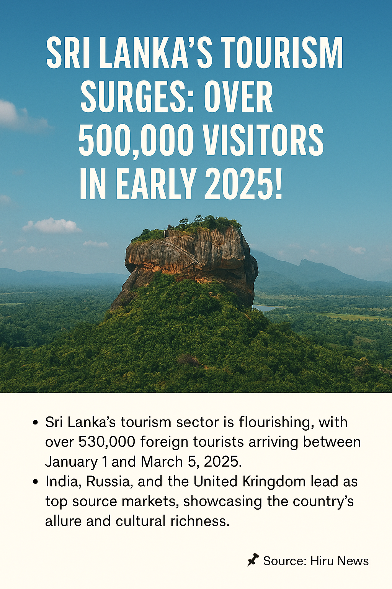
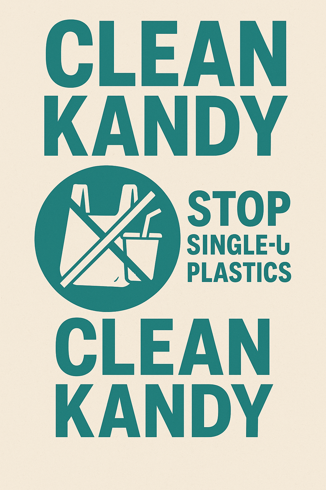
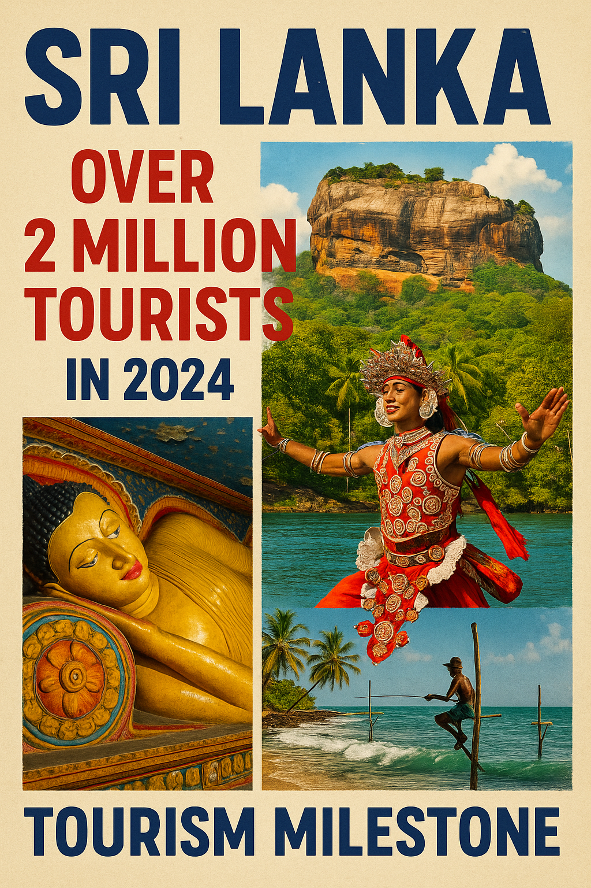
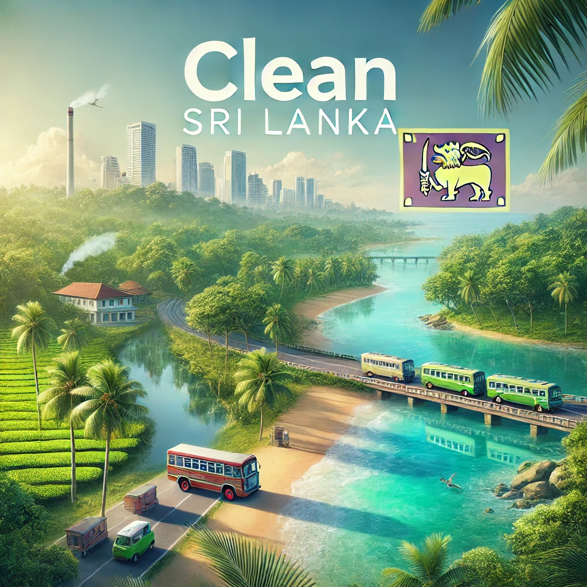

📰 The Victory Day of Sri Lanka
2025/05/18
Celebrating the 16 years of peace after Sri Lanka's brave sons & daughters stood against the terrorist forces and sacrificed their blood, tears, sweat
and souls for a better future for all Sri Lankas. "Dear vetrans, we forever are in debt to you for the immense service you have done for us and for the motherland
and on this day we would like to thank you as a nation of unity and peace for your heroism. Though we might be differrent we stand together as one, as people, as
a nation, as Sri Lankans..."
🌟 Sri Lanka Secures $1 Billion World Bank Support to Boost Jobs and Private Sector Growth
2025/05/012
In a significant move to bolster its economic recovery, Sri Lanka has secured over $1 billion in financial support from the World Bank over the next three years. Announced on May 7, 2025, this initiative aims to create employment opportunities and stimulate private sector development in the country.
Reuters
The World Bank's commitment is designed to expand economic opportunities, strengthen local industries, and attract private capital to support long-term growth. This financial support comes in response to a projected shortfall of approximately 700,000 jobs in Sri Lanka over the next decade, as an estimated one million young people are expected to enter the workforce.
Reuters
This development is part of Sri Lanka's broader efforts to recover from its recent economic challenges, including a severe financial crisis that led to hyperinflation and a $25 billion debt default. The current administration, led by President Anura Kumara Dissanayake, is focusing on economic stability and growth through strategic partnerships and investments.
For more detailed information, you can refer to the following source:
Reuters
Check out our new post : "Things To Do On Vesak Poya Day"
📰 Tragic Bus Accident in Sri Lanka's Hill Country
2025/05/11
On Sunday, May 11, 2025, a passenger bus operated by a state-run travel company skidded off a cliff near the town of Kotmale,
approximately 140 kilometers east of Colombo. The accident resulted in the deaths of eight individuals and injuries to more than 30 others,
including the driver. The incident occurred in Sri Lanka's central hill country, a region known for its tea plantations. Authorities have
noted that such accidents are common in the country's hilly regions, often due to reckless driving and poorly maintained, narrow roads.
AP News

🌟 Sri Lanka's Tourism Surges: Over 500,000 Visitors in Early 2025!th
2025/05/05
Sri Lanka's tourism sector is experiencing a remarkable resurgence, with over 530,000 foreign tourists arriving between January 1 and March 5, 2025. This impressive figure underscores the nation's appeal as a premier travel destination, renowned for its rich culture, stunning landscapes, and historical landmarks.
The Sri Lanka Tourism Development Authority attributes this growth to enhanced promotional efforts, improved safety protocols, and increased global connectivity. Notably, India, Russia, and the United Kingdom have emerged as the top source markets, reflecting a diverse and expanding visitor base.
lankanewspapers.com
This surge not only signifies a robust recovery from past challenges but also highlights Sri Lanka's potential to achieve its ambitious target of 3 million tourist arrivals by the end of 2025.
📌 Source: Hiru News
Elections on May 6th
2025/05/03
The regional election of Sri Lanka is sheduled to be held on the 6thof May.(2025/05/06)
We kindly ask tourist to be aware of this and travel with saftey with consideration of the election and the respecting it.
The regional election though samll is a long awaited and an important election day for the locals.

"Clean Kandy" is underaway...
2025/04/27
The Sacred Temple of Tooth Relic has welcomed many pilgrims as the famous Tooth relic has been set on display for worshipers for a limited amoun to of time.
As over 100,000 visitors has gone to Kandy for this once in a life time opportunity, streets of Kandy have been covered with polythene and garbage.
The government with the help of the Kandy officials has organized "Clean Kandy" a project to clean up and restore the streets of Kandy to its true and beauty.

Over 2 Million Tourists
So far Sri Lanka has welcomed over 2 Million visitors and is expecting many more in the future. This is regarded as a massive milestone for Sri Lanka as it will economicaly
and moraly grow with a great tourism.
Since the establishment of the new government tourists have grown more fond of and supportive of Sri Lanka and its vision. So thank you and congrats to all that made this milestone possible.

What is "Clean Sri Lanka"?
"Clean Sri Lanka" is the newest program launched by the Sri Lankan Government to clean, filter, and enhance the country for a better future.
As part of this initiative, streets, roads, and highways are being cleaned, and new laws are being passed to maintain and improve Sri Lanka’s environment.
This program ensures that both locals and tourists enjoy a cleaner and more beautiful Sri Lanka. We kindly encourage you to support this initiative while you explore the island.
For more information, visit the official government website:
cleansrilanka.gov.lk